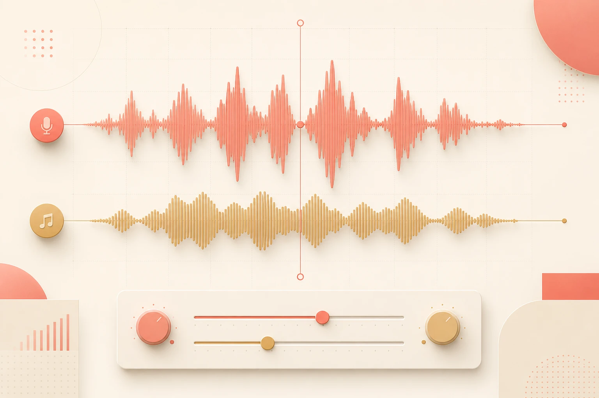

Your AI voiceover and your AI music are both good on their own. The moment you layer them together, something sounds off. The fix is one extra step most people skip entirely: stems.

The real reason it sounds amateur
When you take a full AI-generated music track and layer a voiceover on top, you're stacking two complete audio worlds on top of each other. The music has its own melody, its own rhythm, its own frequency peaks — and so does the voice. They're both fighting for the same sonic real estate at the same time.
The result is a mix that sounds crowded and unintentional, even if each element is technically fine on its own. It's not a quality problem. It's a stacking problem.
The one-line diagnosis
A full music track was never designed to share space with a voiceover. It was designed to stand alone. You're not mixing — you're colliding.
Root cause
Two complete mixes, one timeline
Full music track plus full voiceover equals two things competing for the same frequencies.
The fix
Use stems, not the full track
Separate the track into components. Use only the instrumental stem under your narration.
The result
Intentional, produced sound
Nothing fighting for space. The mix sounds like it was designed that way — because it was.
The fix: one extra step 🎚️
You don't need a different tool, a different voice, or a different track. You need to separate your music into stems before you mix.
- Generate or pull your background track as normal. Use whatever AI music tool you're already using — this step doesn't change. Get the full track you want.
- Run the track through a stem separator. Tools like Spleeter, LALAL.AI, or Moises take a full mixed track and pull it apart into separate components: vocals, bass, drums, melody, and instrumentation. This takes about 30 seconds.
- Pull out the instrumental stem only. You want the version with no vocal, no lead melody competing for the same mid-range frequencies your voiceover lives in. That's the stem you'll use.
- Layer your ElevenLabs narration on top of the instrumental stem. Now there's nothing fighting for space. The music supports the voice instead of competing with it.
- Adjust the stem's volume level to sit under the voice. A rough starting point: instrumental stem at around −12 to −18 dB relative to your voiceover. The voice should be clearly heard without effort.
What changes when you use stems
❌ Full track + voiceover
Melody competes with the narration in the same frequency range. The voice gets buried or the music sounds muffled. The listener works harder than they should. It sounds like two things were stacked, not mixed.
✅ Instrumental stem + voiceover
The music provides atmosphere and rhythm without stepping on the voice. The narration sits clearly on top. The listener hears both without effort. It sounds like it was designed — because it was.
Same two AI tools. Same track. Same voice. The only difference is which version of the music you put underneath.
Which stem separator, for which situation
You don't need anything expensive or complex. Here's a quick reference:
| LALAL.AI | Clean browser-based tool, good for quick one-off separations. Free tier available with limited minutes per track. |
| Moises | Strong separation quality, works well on AI-generated music as well as recorded tracks. Good mobile app if you're working on the go. |
| Spleeter | Open-source, runs locally, no upload limits. Requires a little command-line comfort but handles batch jobs easily. |
| Adobe Audition | Has built-in stem separation if you're already in the Adobe ecosystem — no separate tool needed. |
The honest bit ✅
- Stem separation isn't perfect on every track. Some AI-generated music, especially heavily processed electronic styles, won't separate as cleanly as recorded music. Check the output before you commit to it.
- This doesn't replace gain staging. Even with the instrumental stem, if your voiceover and music are at similar volume levels, they'll still fight. The stem fix opens the frequency space — you still need to set the levels right.
- Not all tracks need this. A minimal ambient pad with no melody or vocals in it already behaves like a stem. If your music track is pure texture, this step may not be necessary.
- Free stem tools have upload limits. If you're doing this at any volume, a paid tier or a local tool like Spleeter will save you more time than you'd expect.
Want your AI audio stack set up properly? 🎙️
If you'd rather have someone map out the full voiceover-to-final-mix workflow for your specific setup — tools, stems, levels, and all — that's what a working session is for.
Book a call →